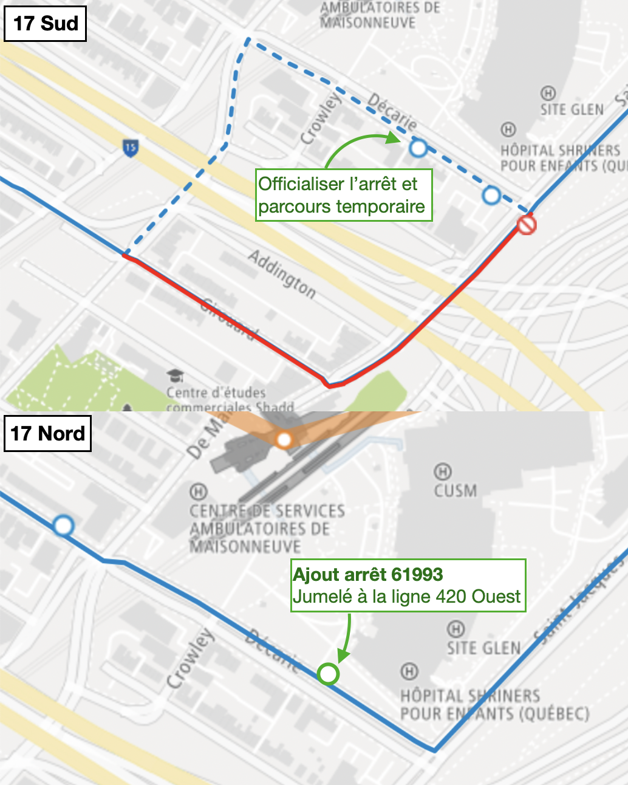

Suggestion d'officialiser le détour de longue durée autour du CUSM pour y ajouter un arrêt dans chaque direction. Cela permet de desservir une institution de santé en plus d'aider la clientèle dans les outils d'information. Le tout peut se faire à coût nul en raison de niveau de service faible sur la ligne 17.
